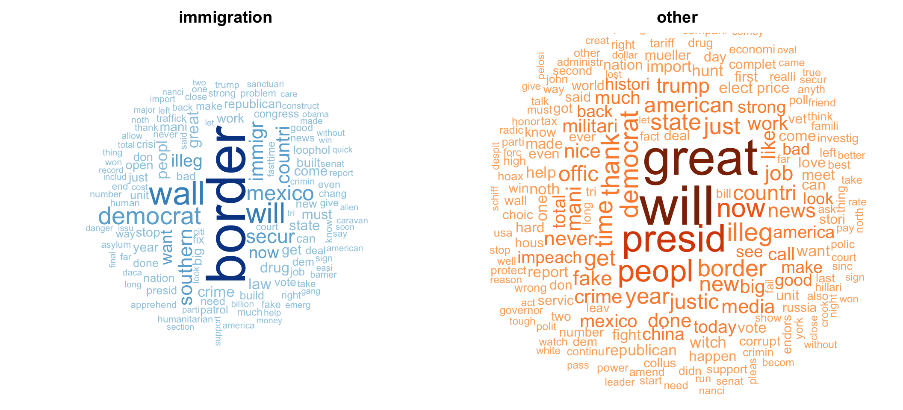
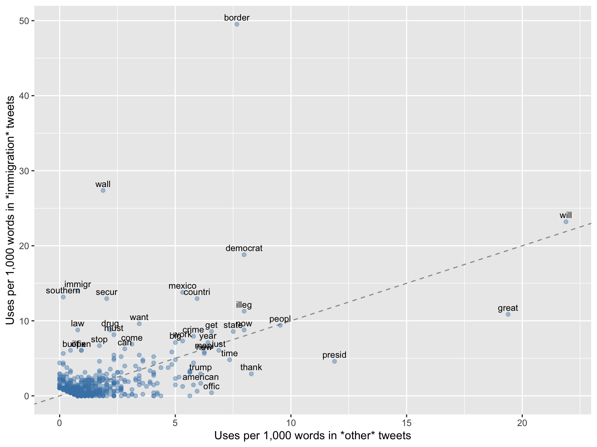
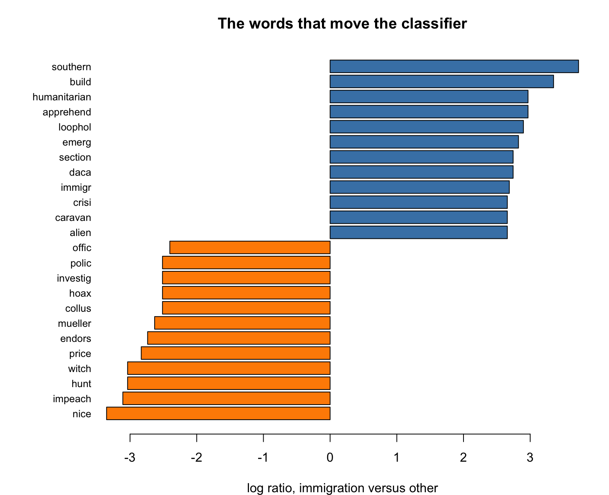

install.packages(c("tm", "SnowballC", "wordcloud", "e1071",
"caret", "ggplot2"))4 Text as Data: Naive Bayes
Week 4, 23 September
Every dataset used so far arrived with its features already made. The UN file had a column for income and a column for urbanization; Fearon and Laitin supplied eleven covariates measured, coded, and named by somebody else. The modeling began at the point where the measurement had finished, and the measurement itself was never our problem.
This week it is our problem. The raw material is 905 tweets, and a tweet is not a row of numbers. Before any algorithm can be applied, somebody has to decide what a feature of a tweet even is, and that decision is not a technical preliminary to the analysis. It is a large part of the analysis, and most of what can go wrong this week goes wrong there rather than in the classifier.
The classifier itself, once we reach it, has an unusual property worth stating at the outset. It rests on an assumption about language that is not approximately true, or true under conditions, but flatly and obviously false, and it works anyway. Establishing why is the second half of the session.
4.1 What Naive Bayes is good at, and what it is not
Benefits.
- It is fast, in that fitting consists of counting rather than of optimization, and it scales to vocabularies of tens of thousands of words without difficulty.
- It performs well with small training sets, which matters when every label has been assigned by a human being reading a document.
- It can be inspected. The fitted model is a table of word frequencies, and one can read off exactly which words pushed a document in which direction.
- It produces a probability for each document rather than a bare classification, and that probability can be thresholded to suit the purpose.
The disadvantages are two, and they are of different kinds.
The first is that the independence assumption on which the method rests is false of language, and we will state it plainly and then violate it deliberately.
The second is subtler and matters more for political science. A text classifier is only ever as good as the labels it was trained on, and those labels were produced by a person applying a coding scheme. The model does not learn what immigration is. It learns what one coder, working from one scheme, decided to call immigration, and it will reproduce that decision faithfully, including the parts of it that were arbitrary.
4.2 The data
The corpus consists of tweets posted by @realDonaldTrump in 2019, filtered and hand-labeled for whether immigration is a main subject of the tweet. It contains 905 tweets.
Before everything else, make sure the necessary packages are installed:
library(tm)
library(SnowballC)
library(wordcloud)
library(caret)
library(ggplot2)
options(scipen = 999)
url <- paste0("https://raw.githubusercontent.com/babakrezaee/",
"AppliedAI-PoliSci/refs/heads/main/data/",
"trump_immigration_2019.csv")
tweets <- read.csv(url, stringsAsFactors = FALSE)
nrow(tweets)[1] 905str(tweets)'data.frame': 905 obs. of 4 variables:
$ id : num 1084065832941031424 1183369132634456064 1097856727020720000 1149289425836367872 1184426268177129472 ...
$ date : chr "2019-01-12 20:33" "2019-10-13 21:09" "2019-02-19 21:53" "2019-07-11 20:08" ...
$ label: chr "other" "other" "immigration" "immigration" ...
$ text : chr "....the FBI was in complete turmoil (see N.Y. Post) because of Comey’s poor leadership and the way he handled t"| __truncated__ "Do you remember two years ago when Iraq was going to fight the Kurds in a different part of Syria. Many people "| __truncated__ "The failed Fast Train project in California, where the cost overruns are becoming world record setting, is hund"| __truncated__ "Democrats had to quickly take down a tweet called “Kids In Cages, Inhumane Treatment at the Border,” because th"| __truncated__ ...The dataset has four columns: a tweet ID, a timestamp, a label, and the text itself.
The outcome needs to be a factor, and the order of its levels is a decision we should make deliberately rather than let R make alphabetically.
tweets$label <- factor(tweets$label, levels = c("other", "immigration"))
table(tweets$label)
other immigration
538 367 round(prop.table(table(tweets$label)), 3)
other immigration
0.594 0.406 The majority class is other, at roughly 59 per cent, and that figure plays the same role here that the two per cent base rate played last week. It is the accuracy obtainable by a model that reads nothing, and no accuracy figure means anything until it has been compared against it.
Notice, though, how different this baseline is from last week’s. Civil war onset occurred in two country-years in a hundred, and the baseline was consequently 98 per cent, which is nearly impossible to beat and useless to match. Here the two classes are of comparable size, which makes accuracy a sensible thing to report at all. That comparability is not a fact about Trump’s Twitter account. It is a property of a corpus that was deliberately constructed to have it, and the price of the construction is that the corpus no longer represents the stream of tweets it was drawn from.
4.3 Part I. From tweets to a matrix
4.3.1 Reading the text before modeling it
The single most useful thing to do with a new corpus is to read some of it.
for (i in 1:4) {
cat(as.character(tweets$label[i]), "|", tweets$text[i], "\n\n")
}other | ....the FBI was in complete turmoil (see N.Y. Post) because of Comey’s poor leadership and the way he handled the Clinton mess (not to mention his usurpation of powers from the Justice Department). My firing of James Comey was a great day for America. He was a Crooked Cop......
other | Do you remember two years ago when Iraq was going to fight the Kurds in a different part of Syria. Many people wanted us to fight with the Kurds against Iraq, who we just fought for. I said no, and the Kurds left the fight, twice. Now the same thing is happening with Turkey......
immigration | The failed Fast Train project in California, where the cost overruns are becoming world record setting, is hundreds of times more expensive than the desperately needed Wall!
immigration | Democrats had to quickly take down a tweet called “Kids In Cages, Inhumane Treatment at the Border,” because the horrible picture used was from the Obama years. Very embarrassing! @foxandfriends Four tweets, and already several of the difficulties are visible. There are URLs, which carry no meaning of their own. There are handles beginning with @. There are capitals used for emphasis rather than for grammar. There are curly quotation marks rather than straight ones, which look identical on the page and are entirely different characters to R. And at least one of these tweets is labeled in a way that a reasonable person might dispute.
4.3.2 The bag of words
The representation we are going to use is the simplest one available, and it is worth stating what it discards before we adopt it.
A document is represented as the set of words it contains, and nothing else. Word order is discarded. Grammar is discarded. Which word modifies which is discarded. “The wall stopped the caravan” and “the caravan stopped the wall” become the same document.
This is called the bag of words, and the name is accurate: we tip the document into a bag, shake it, and record what is inside.
Stated that way it sounds indefensible, and for many questions it is. For this question it is mostly adequate, because whether a tweet is about immigration is largely determined by which words appear in it and hardly at all by the order in which they appear. A tweet containing border, caravan, and asylum is about immigration under any permutation. The adequacy of the representation depends on the question, therefore, and not on the corpus, and a question about who did what to whom would require something else entirely.
4.3.3 Cleaning, one decision at a time
tm works on a corpus, which is its container for a collection of documents.
corpus <- VCorpus(VectorSource(tweets$text))
corpus[[1]]$content[1] "....the FBI was in complete turmoil (see N.Y. Post) because of Comey’s poor leadership and the way he handled the Clinton mess (not to mention his usurpation of powers from the Justice Department). My firing of James Comey was a great day for America. He was a Crooked Cop......"Cleaning is applied with tm_map(), which takes a corpus and a transformation and returns a corpus. We will need one transformation that tm does not supply, namely the removal of a pattern, so we build it first.
replace_with_space <- content_transformer(function(x, pattern) {
gsub(pattern, " ", x)
})content_transformer() wraps an ordinary function operating on character strings so that tm_map() will apply it to the text of each document. Any cleaning step you invent yourself will need this wrapper.
clean <- tm_map(corpus, content_transformer(tolower))
clean <- tm_map(clean, replace_with_space, "http[s]?://\\S*")
clean <- tm_map(clean, replace_with_space, "@\\S+")
clean <- tm_map(clean, replace_with_space, "[^a-z ]")
clean <- tm_map(clean, removeWords, stopwords("english"))
clean <- tm_map(clean, stemDocument)
clean <- tm_map(clean, stripWhitespace)
clean[[1]]$content[1] "fbi complet turmoil see n y post comey s poor leadership way handl clinton mess mention usurp power justic depart fire jame comey great day america crook cop"Seven lines, and every one of them is a substantive choice rather than a housekeeping step. Taking them in order:
Lowercasing makes Wall and wall the same feature, which is what we want, and also makes US and us the same feature, which is not. There is no setting that gets both right.
Removing URLs and handles is straightforward here, since a link carries no words. Note that this throws away @ThomasHomanICE, the acting director of Immigration and Customs Enforcement, whose presence in a tweet is close to decisive evidence about its topic. We are discarding a genuinely informative feature for the sake of a simple pipeline, and whether that is the right trade is a question you could answer empirically in the workshop.
[^a-z ] deletes everything that is not a lowercase letter or a space, which removes punctuation, digits, emoji, and — the reason it is written this way rather than with removePunctuation() — the curly quotation marks and en dashes that removePunctuation() leaves untouched. Without this line the model acquires features that are invisible on screen and appear in the output as things like <U+2019>, which is among the more disorienting hours available to a beginner in text analysis.
Stopwords are the words carrying little topical content: the, and, of, is. stopwords("english") is a list somebody else compiled, and you should look at it (head(stopwords("english"), 50)) rather than trust it. It contains not, which reverses meaning, and it contains against, which is doing real work in a corpus about policy disputes.
Stemming reduces inflected forms to a common root, so immigration, immigrants, and immigrate all become immigr. This is why the output above is not quite English. The gain is that three sparse features become one dense one; the cost is that the stems are occasionally wrong and always ugly.
Whitespace is cosmetic, and is the one line here that is genuinely housekeeping.
The order matters, and not always in obvious ways. We strip punctuation before removing stopwords, which means don't has already become dont and no longer matches the stopword don't. Reversing those two lines changes the vocabulary. This is the argument of Denny and Spirling (denny2018?), one of this week’s readings, and their finding is worth carrying into any project of your own: preprocessing choices that are reported in a single sentence of an appendix, if at all, can change the substantive results.
4.3.4 The document-term matrix
dtm <- DocumentTermMatrix(clean)
dtm<<DocumentTermMatrix (documents: 905, terms: 2735)>>
Non-/sparse entries: 16606/2458569
Sparsity : 99%
Maximal term length: 16
Weighting : term frequency (tf)This is the object the whole of Part I was building toward. Rows are documents, columns are terms, and the entry in row \(i\) and column \(j\) is the number of times term \(j\) appears in document \(i\).
Two numbers in that output deserve attention. There are close to three thousand distinct terms across 905 tweets, so the matrix has several times more columns than rows. And it is 99 per cent sparse, meaning that essentially every cell is zero, since any given tweet contains perhaps fifteen of the three thousand available words.
Both properties are normal for text and both would be alarming anywhere else. A regression with three thousand predictors and nine hundred observations cannot be fitted at all. Naive Bayes can, and the reason it can is exactly the assumption we are about to make.
4.3.5 What is in the corpus
Before modeling, it is worth looking at the two classes side by side.
par(mfrow = c(1, 2), mar = c(0, 0, 2, 0))
set.seed(7)
wordcloud(clean[tweets$label == "immigration"], min.freq = 12,
random.order = FALSE, colors = brewer.pal(7, "Blues")[3:7])
title("immigration")
wordcloud(clean[tweets$label == "other"], min.freq = 12,
random.order = FALSE, colors = brewer.pal(7, "Oranges")[3:7])
title("other")
Word clouds are a poor instrument for inference, since the eye cannot compare areas reliably and the layout is random. As a first look at a corpus, however, they are hard to beat.
Note what they show and what they do not. border and wall dominate the immigration cloud, as expected. But illeg appears in both, because the negative class was deliberately constructed to contain tweets about illegal wiretaps and illegal impeachments. And democrat is large on both sides, because Trump attacks Democrats over immigration and over everything else. The classifier cannot succeed here by finding a single keyword, which is the reason this corpus was built the way it was.
4.3.6 Splitting before anything else
The rows were shuffled before distribution, so splitting on row number gives an approximately random split.
n <- nrow(tweets)
train_id <- 1:floor(0.8 * n)
dtm_train <- dtm[train_id, ]
dtm_test <- dtm[-train_id, ]
y_train <- tweets$label[train_id]
y_test <- tweets$label[-train_id]
c(train = length(y_train), test = length(y_test))train test
724 181 round(prop.table(table(y_train)), 3)y_train
other immigration
0.613 0.387 round(prop.table(table(y_test)), 3)y_test
other immigration
0.519 0.481 The class proportions differ somewhat between the two halves, which is what a random split of nine hundred cases does, and the test-set proportion is the baseline any test-set accuracy must be compared against.
The split comes before the next step, and the order is not arbitrary. We are about to choose which words to keep, and that choice will be made using the training data alone. Selecting a vocabulary on all 905 tweets and then splitting would let information from the test set into the model, and the resulting accuracy would be optimistic for a reason nothing in the output would reveal. This is the most common way a text classification pipeline lies to its author.
4.3.7 Trimming the vocabulary
Most of the three thousand terms appear once or twice in the entire corpus. They cannot support any generalization, and they enlarge the model considerably.
freq_words <- findFreqTerms(dtm_train, 5)
length(freq_words)[1] 651head(freq_words, 24) [1] "abl" "absolut" "abus" "act" "action" "actual"
[7] "adam" "administr" "african" "agenda" "agent" "ago"
[13] "agre" "agreement" "aid" "alien" "allow" "almost"
[19] "along" "alreadi" "also" "alway" "amend" "america" Keeping only terms appearing at least five times in the training documents reduces the vocabulary by roughly three quarters. The threshold of five is conventional and arbitrary in equal measure, which makes it a parameter of exactly the kind we have twice now chosen by cross-validation: \(k\) in Week 2, the complexity parameter in Week 3, and the size of the vocabulary here. Changing it and watching what happens is the first thing to try in the workshop.
dtm_train <- dtm_train[, freq_words]
dtm_test <- dtm_test[, freq_words]The test matrix is subset to the training vocabulary. Words that occur only in the test set are discarded, which is the correct behavior: a model that never saw a word during training has nothing to say about it.
4.3.8 The counts stay as counts
That is the matrix we will model, and no further transformation of it is needed. Rows are tweets, columns are words, and each entry is the number of times that word is used in that tweet.
counts_train <- as.matrix(dtm_train)
counts_test <- as.matrix(dtm_test)
dim(counts_train)[1] 724 651counts_train[1:3, 1:6] Terms
Docs abl absolut abus act action actual
1 0 0 0 0 0 0
2 0 0 0 0 0 0
3 0 0 0 0 0 0as.matrix() converts tm’s compressed representation into an ordinary R matrix, which is easier to work with and, at this size, costs nothing. On a corpus of a hundred thousand documents it would exhaust the memory of your laptop, and the compressed form would have to be kept.
4.3.9 Two rates per word
Almost everything the classifier will do is contained in the following comparison, which we can compute directly and without any model at all. The question is only how often each word gets used in each kind of tweet.
total_immigration <- colSums(counts_train[y_train == "immigration", ])
total_other <- colSums(counts_train[y_train == "other", ])
totals <- data.frame(word = freq_words,
immigration = total_immigration,
other = total_other)
head(totals[order(-totals$immigration), 2:3], 12) immigration other
border 237 49
wall 131 12
will 111 140
democrat 90 51
immigr 67 5
mexico 66 34
southern 63 1
countri 62 38
secur 62 13
illeg 54 51
great 52 124
want 46 22Across the training tweets labeled immigration, the stem border is used 237 times; across those labeled other, 49 times.
Those two numbers cannot be compared as they stand, because the two groups are not the same size and do not contain the same quantity of text.
sum(total_immigration)[1] 4786sum(total_other)[1] 6395The immigration tweets supply fewer words in total, so every word will tend to show a smaller count there, whether or not it is distinctive. The remedy is to divide by the total, which turns a count into a rate: out of every thousand words used in immigration tweets, how many are this word?
rate_immigration <- 1000 * total_immigration / sum(total_immigration)
rate_other <- 1000 * total_other / sum(total_other)
rates <- data.frame(word = freq_words,
immigration = rate_immigration,
other = rate_other)
round(head(rates[order(-rates$immigration), 2:3], 12), 2) immigration other
border 49.52 7.66
wall 27.37 1.88
will 23.19 21.89
democrat 18.80 7.97
immigr 14.00 0.78
mexico 13.79 5.32
southern 13.16 0.16
countri 12.95 5.94
secur 12.95 2.03
illeg 11.28 7.97
great 10.87 19.39
want 9.61 3.44Read the first row as a conditional statement: given that a tweet is about immigration, about 50 of every thousand words it uses are border; given that it is about something else, about 8 are.
That is a conditional probability, and it is the only probabilistic idea this handout requires. A conditional probability is a rate computed within a subgroup rather than across everything. We are not asking how common border is in the corpus. We are asking how common it is within the immigration tweets, and then asking the same question again within the others. Naive Bayes is built entirely out of quantities of this kind, and every one of them is a proportion you could work out by hand from colSums().
ggplot(rates, aes(other, immigration)) +
geom_abline(slope = 1, intercept = 0, colour = "gray60", linetype = 2) +
geom_point(alpha = 0.4, colour = "steelblue") +
geom_text(data = subset(rates, immigration > 6 | other > 6),
aes(label = word), size = 3, vjust = -0.6) +
labs(x = "Uses per 1,000 words in *other* tweets",
y = "Uses per 1,000 words in *immigration* tweets")
The dashed line is equality, and a word sitting on it carries no information whatever about the label. Distance from the line is informativeness, and the direction of the departure is which way the word votes.
Most of the vocabulary sits in the corner near the origin, used rarely in both classes. A small number of words sit far above the line: border, wall, southern, secur, immigr. A few sit below it, great, presid, and thank among them, and they are evidence against the immigration label. And will sits high on both axes, which is to say it is common everywhere and therefore useless.
Nothing has been fitted. This figure is the model, drawn before we build it.
4.4 Part II. Naive Bayes
4.4.1 The question the model asks
We have a tweet, and we want to know which label it should receive. The tempting way to proceed is to ask directly: given these words, how likely is the tweet to be about immigration?
That question is difficult to answer, because the number of possible combinations of words is astronomically large and we have 724 training tweets. Almost no combination will ever have been observed.
The move that makes the problem tractable is to turn the question around. Instead of asking how likely the label is given the words, we ask how likely the words are given each label, which is a question we can answer, because it is the table of rates we just computed. Then we compare.
For a tweet containing border and wall, the comparison runs:
- If this tweet were about immigration, how surprising would these words be? Not very: in immigration tweets border is used at about 50 words per thousand and wall at about 27.
- If this tweet were about something else, how surprising would they be? Considerably more so: about 8 per thousand and about 2.
The words are far less surprising under the first supposition than the second, and the tweet is therefore assigned to immigration. That is the entire idea. Bayes’ rule is the formal statement of “turn the question around,” and it also supplies the correction for how common each label is to begin with, so that a rare category requires more evidence than a common one. For our purposes the sentence is enough; the algebra is in the further reading for those who want it.
4.4.2 The naive assumption, which is false
Turning the question around gets us to “how likely are these words, given the label,” and that is still a question about a whole combination of words at once. The final simplification, the one the method is named for, is this:
Assume that, within a class, each word appears independently of every other.
Which is to say that once we know the tweet is about immigration, learning that it contains southern tells us nothing about whether it contains border.
That is false. It is not a convenient approximation or a claim that holds under stated conditions. Southern and border co-occur constantly in this corpus, as do illegal and immigration, and caravan and migrant. Language is nothing but dependence between words.
The assumption is made anyway, because it converts an impossible calculation into a possible one: the joint question about a whole tweet becomes a product of the separate per-word rates in the table above, each of which we can estimate from a few hundred documents.
The consequence is specific and worth knowing, because it determines how the output should be read. Correlated words constitute double counting. When a tweet contains border, southern, wall, and patrol, the model treats these as four independent pieces of evidence when they are closer to one piece stated four times, and it therefore becomes far more confident than the evidence warrants. This is why naive Bayes classifies well and yet reports probabilities that pile up at 0 and 1 with almost nothing in between. The ranking is usually right and the confidence is usually overstated, so these numbers can be used to sort documents but should not be read as calibrated probabilities.
4.4.3 Words that never occurred
One arithmetic problem has to be dealt with before fitting. Consider the words that appear in one class of the training data and never in the other.
never_in_other <- names(which(total_other == 0))
length(never_in_other)[1] 21never_in_other [1] "aid" "alien" "apprehend" "build" "caravan"
[6] "census" "citizenship" "cross" "daca" "deport"
[11] "emerg" "expens" "humanitarian" "migrant" "progress"
[16] "reduc" "renov" "schumer" "section" "solv"
[21] "stay" Twenty-one words are used in immigration tweets and never once in an other tweet. Some are the terms one would expect — caravan, deport, daca, migrant — and some, stay and progress among them, are absent from the other class by accident rather than for any reason.
For any such word the estimated rate in the other class is zero, and since the model multiplies the per-word rates together, a single zero drives the whole product to zero: one mention of caravan would rule out the other label absolutely, whatever the remaining thirty words said. That is too strong a conclusion to draw from six thousand words of training text, and the standard repair, Laplace smoothing, adds one pretend occurrence of every word to every class before the rates are computed, so that no rate is exactly zero and no single word can veto a class outright.
4.4.4 Fitting
Fitting is two lines, because fitting is nothing but the counting we have already done.
p_immigration <- (total_immigration + 1) / sum(total_immigration + 1)
p_other <- (total_other + 1) / sum(total_other + 1)Each vector holds, for one class, the share of that class’s words accounted for by each word in the vocabulary. The + 1 is the smoothing, visible here as an actual addition rather than hidden behind an argument, and adding it to the denominator as well keeps each vector summing to one.
One thing remains, which is how common each label is to begin with. A tweet with no informative words in it should fall to whichever label is more common, and Bayes’ rule supplies that correction automatically.
prior_immigration <- mean(y_train == "immigration")
prior_other <- mean(y_train == "other")
round(c(other = prior_other, immigration = prior_immigration), 3) other immigration
0.613 0.387 That is the whole model: two rate tables and two prior probabilities. Nothing was optimized, nothing converged, and there is no random seed to set. It can also be read directly, which is a thing that could not be said of last week’s forest.
round(1000 * c(immigration = p_immigration[["border"]],
other = p_other[["border"]]), 2)immigration other
43.77 7.10 round(1000 * c(immigration = p_immigration[["great"]],
other = p_other[["great"]]), 2)immigration other
9.75 17.74 round(1000 * c(immigration = p_immigration[["caravan"]],
other = p_other[["caravan"]]), 2)immigration other
2.02 0.14 The first word points strongly toward immigration and the second, great, points the other way. The third is one of the twenty-one: its rate in the other class is no longer zero, but it is very small, and a tweet mentioning caravans can still be classified as other if everything else about it says so.
Note
You may be expecting a call to a modeling function here, and e1071 does provide naiveBayes(). Given a matrix of numbers, however, that function assumes each feature is normally distributed within each class, which is badly wrong for word counts that are zero in nine cases out of ten; fed this matrix it classifies almost every tweet as immigration. The arithmetic above is the version the literature means by naive Bayes for text, and it is short enough to write out.
4.4.5 Predicting
For a new tweet we work out how well each of the two rate tables accounts for the words it contains, and assign it to whichever does better.
score_immigration <- as.vector(counts_test %*% log(p_immigration)) +
log(prior_immigration)
score_other <- as.vector(counts_test %*% log(p_other)) +
log(prior_other)
pred <- factor(ifelse(score_immigration > score_other, "immigration", "other"),
levels = c("other", "immigration"))
head(pred)[1] other other immigration other immigration other
Levels: other immigrationThe matrix multiplication does one thing per tweet: for every word in the vocabulary, take that word’s rate under one label, and add it in once for each time the tweet uses it. A tweet using border four times therefore contributes four times the evidence of a tweet using it once, which is the whole reason for keeping counts rather than mere presence.
Logarithms are used because the alternative is multiplying several hundred numbers of size one in a thousand, which underflows to zero on any computer. Adding logarithms instead leaves the ordering of the two scores unchanged, and the ordering is all we need.
4.4.6 The confusion matrix
cm <- table(Predicted = pred, Actual = y_test)
cm Actual
Predicted other immigration
other 82 5
immigration 12 82accuracy <- sum(diag(cm)) / sum(cm)
round(accuracy, 4)[1] 0.9061baseline <- mean(y_test == "other")
round(baseline, 4)[1] 0.5193Roughly 90 per cent correct against a baseline of roughly 52 per cent, and unlike last week the gap is large. The model has learned something.
It is worth being precise about what it is 90 per cent accurate at. This is a corpus assembled so that the two classes would be of comparable size; in Trump’s actual 2019 output, immigration tweets are a clear minority and the tweets that are not about immigration are far more varied than the ones collected here. Run on the full year, the model would meet many more opportunities to produce a false alarm, and its performance would fall.
Last week’s discipline still applies, then: the summary number is not where the substance lies. The table is.
confusionMatrix(pred, y_test, positive = "immigration")Confusion Matrix and Statistics
Reference
Prediction other immigration
other 82 5
immigration 12 82
Accuracy : 0.9061
95% CI : (0.8539, 0.9443)
No Information Rate : 0.5193
P-Value [Acc > NIR] : <0.0000000000000002
Kappa : 0.8124
Mcnemar's Test P-Value : 0.1456
Sensitivity : 0.9425
Specificity : 0.8723
Pos Pred Value : 0.8723
Neg Pred Value : 0.9425
Prevalence : 0.4807
Detection Rate : 0.4530
Detection Prevalence : 0.5193
Balanced Accuracy : 0.9074
'Positive' Class : immigration
caret supplies the quantities that accuracy conceals, and three of them are worth reading now, with a fuller treatment in Week 6.
No Information Rate is the baseline computed above, printed by caret so that it cannot be overlooked, together with a test of whether the model beats it.
Sensitivity, also called recall, is the share of genuine immigration tweets that the model found. Of the immigration tweets in the test set, it caught almost all of them.
Positive predictive value, also called precision, is the share of the tweets it flagged that really were about immigration, and here it is noticeably lower. The model over-flags: it would rather call a borderline tweet immigration than miss one.
Which of those two numbers matters more is not a statistical question. If the classifier is being used to estimate how much of Trump’s 2019 output concerned immigration, over-flagging inflates the estimate directly and precision is the number to watch. If it is being used to retrieve a set of tweets for a human being to read through, recall matters more and a few false positives cost only reading time.
4.4.7 The most informative words
The fitted model is a pair of tables, so we can ask which words move it most. For each word, compare its rate in one class with its rate in the other, on a log scale so that the two directions are symmetric.
log_ratio <- sort(log(p_immigration / p_other))
top <- c(head(log_ratio, 12), tail(log_ratio, 12))
par(mar = c(4, 7, 3, 2))
barplot(top, horiz = TRUE, las = 1, cex.names = 0.8,
col = ifelse(top > 0, "steelblue", "darkorange"),
xlab = "log ratio, immigration versus other",
main = "The words that move the classifier")
This is the compensation for having a simple model, and it is worth comparing with last week’s variable importance plot, which could report only how much a feature mattered. Here we can read the direction as well, and the words themselves are legible: southern, apprehend, caravan, alien, humanitarian, loophol on one side, and impeach, witch, hunt, collus, mueller on the other.
The orange side is worth a moment, because it shows the classifier learning something other than the concept we asked it to learn. Impeachment and the Mueller investigation are not the opposite of immigration. They are simply what else Trump was tweeting about in 2019, and the model has discovered that a tweet about the Mueller report is not about the border. That inference is correct on this corpus and would transfer to no other year, no other author, and no other period.
4.4.8 Reading the errors
Fewer than twenty test tweets were misclassified, and reading them is more informative than any summary statistic.
test_text <- tweets$text[-train_id]
wrong <- which(pred != y_test)
length(wrong)[1] 17for (i in head(wrong, 6)) {
cat("actual:", as.character(y_test[i]),
"| predicted:", as.character(pred[i]), "\n",
substr(test_text[i], 1, 180), "\n\n")
}actual: other | predicted: immigration
Everyone very excited about the new deal with Mexico!
actual: immigration | predicted: other
While the reviews and reporting on our Border Immigration Agreement with Mexico have been very good, there has nevertheless been much false reporting (surprise!) by the Fake and Co
actual: other | predicted: immigration
“This is not Congressional Oversight, this is bullying.” Jason Riley, The Wall Street Journal
actual: other | predicted: immigration
Kevin Corke, @FoxNews “Don’t forget, Michael Cohen has already been convicted of perjury and fraud, and as recently as this week, the Wall Street Journal has suggested that he may
actual: immigration | predicted: other
Our Border Control Agents have done an incredible job under very adverse conditions. I am very proud to have increased their salaries because of the great job they do. Nobody deser
actual: other | predicted: immigration
As Corey Lewandowski stated very clearly yesterday in front of the House Judiciary Committee, President Trump didn’t do anything wrong or illegal. But they all know that. The Democ The failures fall into recognizable families, and none of them is random.
Two of the six are about the Wall Street Journal, in which the model saw wall, and one insists that the president did nothing illegal, in which it saw illeg. These are the near misses the corpus was built to contain, and they are precisely the errors the bag of words guarantees, since Wall Street is a phrase and a bag has no phrases in it.
Two others fail in the opposite direction, and they are subtler. A tweet complaining about false reporting on the Border Immigration Agreement with Mexico really is about immigration, but it is written in the vocabulary of media attacks. A tweet praising Border Control agents for doing a great job carries one of the strongest other words in the model. In both cases the label is right and the words point the other way.
Dropping the head() prints the remaining eleven, and two of them are worth the look. One is an endorsement of Senator Cindy Hyde-Smith, described as strong on the border and illegal immigration. The coding scheme says endorsement boilerplate is other, on the grounds that the border is one slot in a formula rather than the subject of the tweet, and the model, having no notion of the difference, disagrees. Here the model is not making an error about the world; it is failing to reproduce a coding rule that could defensibly have gone the other way. The second is a tweet thanking @DHSgov, @CBP, and @ICEgov, labeled immigration, that the model called other because after the third line of our cleaning pipeline there was almost nothing left of it but the words thank you.
Each family points to a different repair: word pairs rather than single words for Wall Street, keeping handles for the CBP tweet, and, for the endorsement boilerplate, nothing that a bag of words can do at all.
4.5 The politics of classification
Every model this term has been an instrument for sorting cases into categories, and text classifiers are distinctive only in that the categories are usually categories of speech.
Consider what this one is. It is a small machine that reads political speech and decides what it is about. Scaled up and pointed at a stream rather than a file, that is content moderation, media monitoring, and a large part of contemporary state surveillance of political communication. The architecture in this handout is the architecture of those systems, differing in scale and in vocabulary rather than in kind.
Two properties of what we built are therefore worth carrying forward.
The first is that the categories arrive from outside the model and are not discoverable from within it. Someone decided that immigration and other were the relevant distinction, and no amount of accuracy makes that the right distinction to have drawn. The choice of categories is prior to everything technical and is almost never presented as a choice.
The second is that the errors are not evenly distributed. Our classifier over-flags, and the tweets it wrongly flags are not a random selection: they are the ones using the vocabulary of immigration for other purposes. Any system of this kind misclassifies in a patterned way, and the pattern falls on whoever happens to speak in the terms the model has learned to watch for. When the stakes are a table in a paper, this is a measurement error. When the stakes are a takedown, a flag, or a visit, it is something else.
Week 2 ended on who defines similarity and Week 3 on who sets the threshold. This week the question is who writes the codebook, since by the time the model is trained, the most consequential decisions have already been made and are no longer visible anywhere in the output.
4.6 Reading
Grimmer, J., and Stewart, B. M. 2013. “Text as Data: The Promise and Pitfalls of Automatic Content Analysis Methods for Political Texts.” Political Analysis 21(3): 267–297. (grimmer2013?)
The standard orientation to the field, and the source of the principles this handout has been quietly applying throughout: that all language models are wrong but some are useful, that there is no globally best method, and above all that validation is not optional. Read their discussion of supervised methods alongside Part II, and note how much of the article is about what can go wrong rather than about what to run.
Denny, M. J., and Spirling, A. 2018. “Text Preprocessing For Unsupervised Learning: Why It Matters, When It Misleads, and What To Do About It.” Political Analysis 26(2): 168–189. (denny2018?)
This is the article behind the cleaning section. Their demonstration is that decisions reported in a sentence of an appendix — stemming, stopwords, whether to lowercase — can change substantive conclusions, and that the ordering of those decisions is itself consequential. Their setting is unsupervised, and the reason to read it here is that supervised work hides the same problem behind an accuracy figure that looks like validation and is not.
Barberá, P., Boydstun, A. E., Linn, S., McMahon, R., and Nagler, J. 2021. “Automated Text Classification of News Articles: A Practical Guide to Using Supervised Machine Learning Methods.” Political Analysis 29(1): 19–42. (barbera2021?)
The closest article to what we did above, and the one to read for the parts this handout compressed. Give particular attention to their treatment of the human coding stage, including how many coders are needed and how disagreement between them should be handled, since that is the stage our corpus has exactly one of.
Recommended, not required.
Hopkins, D. J., and King, G. 2010. “A Method of Automated Nonparametric Content Analysis for Social Science.” American Journal of Political Science 54(1): 229–247. (hopkins2010?)
Worth reading for one argument that cuts against the whole framing of this week. Most political science questions about text are questions about proportions — what share of tweets concerned immigration — rather than about individual documents, and the authors show that a classifier optimized for per-document accuracy can produce biased estimates of exactly those proportions, because its errors need not cancel. If you intend to count categories rather than retrieve documents, this is the article to have read first.
4.7 Before the workshop
Install tm, SnowballC, wordcloud, caret, and e1071, and run every chunk in this handout once. Nothing here takes more than a few seconds, and the entire pipeline runs in well under a minute, which is a pleasant change from last week. e1071 is not called directly anywhere below, but caret needs it installed in order to report the confusion matrix.
Read the data README, at data/trump_immigration_2019_README.md in the course repository, and in particular the coding scheme and the four rules for hard cases. It also carries a content warning that is worth taking seriously: these tweets make disputed empirical claims about immigrants, and some of the language is ugly. They are reproduced unedited because editing them would corrupt the corpus.
4.8 Questions for the session
Come with a view on at least two of these.
The independence assumption is false of language and the classifier works anyway. What does that suggest about the relationship between the realism of a model’s assumptions and its usefulness? Is your answer the same for a predictive model as for an explanatory one?
Our cleaning pipeline deleted
@ThomasHomanICE, the handle of the acting director of ICE, whose presence is close to decisive evidence about a tweet’s topic. Defend the deletion. Then defend the opposite choice. Which argument would you actually make in a paper, and what would you have to report either way?The coding scheme decides that immigration mentioned as the seventh item in a list of accomplishments is
other. A different coder could decide otherwise. Trace what would change: the labels, the model, the accuracy, and the substantive claim you would end up making about how much of Trump’s 2019 output concerned immigration.This corpus was assembled so that the two classes would be roughly balanced, which is why an accuracy figure is interpretable at all. It is therefore no longer a sample of anything. What would you have to do differently if the question were not “is this tweet about immigration” but “what share of Trump’s 2019 tweets were about immigration”?
This handout built a machine that reads political speech and decides what it is about, using roughly forty lines of R and 724 labeled examples. Given how little that took, what follows about who is able to build such systems, and about what a political scientist’s distinctive contribution to them should be?